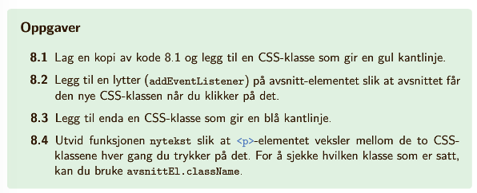
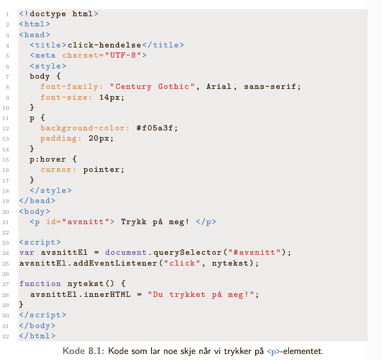

Hendelsene vi snakker om i IT-faget er ikke hendelser som "rakk ikke bussen", "har bursdag" eller liknende, men hendelser som er knyttet til nettleseren og brukeren av en nettside. Disse kan være å laste siden, å bevege musepekeren, å fylle input i et skjema, å klikke på en knapp eller andre.
Hendelser kan vi bruke til å lage det vi kaller hendelsesstyrte funksjoner: funksjoner som kjører først når en bestemt hendelse skjer.
Vi samler de viktigste hendelsene i en tabell (flere finnes på s. 124):
| Hendelse | Forklaring |
|---|---|
| load | Nettsiden lastes |
| click | Et element klikkes |
| dblclick | Et element dobbelklikkes |
| input | Noe skrives i et inputfelt |
| change | Et select-element (element i en drop-down-meny) endres |
| keydown | En tast trykkes ned |
| keyup | En tast slippes opp |
| mousemove | Musepekeren beveges |
| mouseover | Musepekeren beveges på et element |
| mouseout | Musepekeren beveges fra et element |
For å finne ut om en hendelse inntreffer, må vi ha en lytter som følger med. Denne lytteren er selve elementet, som kan være enten document, body eller enkeltelementer på nettsiden. Til denne legger vi en lytter som skal følge med på en spesiell hendelse (fra tabellen over f.eks.). Dersom hendelsen inntreffer, blir en funksjon kallet. Vi kaller slike funksjoner hendelsesstyrte funksjoner
Syntaksen for å legge til lyttere er
element.addEventListener("hendelse", funksjon);
Legg merke til at funksjonen ikke kalles når koden skrives, men kun nevnes (vi bruker ikke funksjon())
For å legge til en lytter må vi først hente inn elementet. I dette tilfellet er elementet overskriften til dette avsnittet (med klasse .overskrift).
var overskriftEl = document.querySelector(".overskrift");
overskriftEl.addEventListener("click", fargeFunksjon);
Denne funksjonen må defineres:
function fargeFunksjon() {
overskriftEl.style.color="red";
}
Jeg lager en div og sier at den skal fylles med teksten "jeg er ikke en tom div!" når den dobbelklikkes
< div id="tom" >< /div >
< script >
var divEl = document.querySelector("#tom");
divEl.addEventListener("dblclick", tekstFunksjon);
var tekstEl = document.createElement("p");
tekstEl.innerHTML = "jeg er ikke en tom div!";
function tekstFunksjon() {
divEl.appendChild(tekstEl);
}
< /script >
Det går også an å ha funksjoner knyttet til hendelser uten å legge inn en lytter. Dersom du vet du har kontroll nok til å veksle mellom de to kan mindre hendelsesstyrte funksjoner lages på denne måten.
Skal du kun velge én (det gjelder de fleste av dere) holder dere dere til å bruke lyttere som i forrige eksempel, da det er denne metoden boka forholder seg til.
Den andre metoden er at vi lager funksjonen som
element.onHendelse = function(){
definer funksjon;
}
Eksemplet over blir da
< div id="tom2" >< /div >
< script >
var divEl2 = document.querySelector("#tom2");
var tekstEl2 = document.createElement("p");
tekstEl2.innerHTML = "jeg er heller ikke en tom div!";
divEl2.ondblclick = function(){
divEl2.appendChild(tekstEl2);
}
< /script >
onHendelse kan også legges direkte når elementes lages i html:
< div ondblclick = "tekstfunksjon()">
Da defineres funksjonen i < script > som før
Dersom vi øsnker å fjerne en lytter når funksjonen har kjørt, bruker vi metoden
element.removeEventListener("hendelse", funksjon)
For eksempel
divEl.removeEventListener("dblclick", tekstFunksjon)
s. 127: oppgave 8.1, 8.2, 8.3, 8.4
 